🧲
Легко начать
Одно нажатие — заброс, короткая мини-игра — и улов твой. Через пару секунд ты уже рыбачишь, на компьютере или на телефоне.
Забрасывай огромный магнит, вытаскивай ржавые гвозди, золотые короны и инопланетные артефакты, продавай улов, улучшай снаряжение и отправляйся всё дальше — от тихого пруда до стимпанк-города.
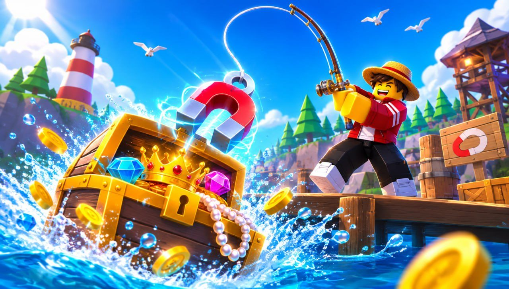
Магнитная рыбалка — симулятор в Roblox, где вместо рыбы ты вылавливаешь всё, что люди когда-либо роняли в воду. В каждом мире свои сокровища, каждый улов делает тебя богаче, а каждое улучшение открывает путь дальше.
Одно нажатие — заброс, короткая мини-игра — и улов твой. Через пару секунд ты уже рыбачишь, на компьютере или на телефоне.
90 предметов пяти редкостей: от ржавого гвоздя до Короны короля и Сердца бездны. В каждый сезон клюёт своё.
Пруды и реки, затонувший корабль, замёрзшее озеро, Атлантида, инопланетный океан, конфетный остров, вулкан, пиратская бухта и не только.
Разобраться — минута, стать мастером — гораздо интереснее.
Нажми 1 на клавиатуре или кнопку внизу экрана на телефоне и подойди к воде.
Кликни или нажми на воду. Магнит полетит по дуге — жди «!» над ним.
Жми, когда белая полоска в зелёной зоне. Чем реже улов, тем больше попаданий и быстрее реакция.
Сдавай улов скупщику, покупай удочки, магниты и рюкзак побольше — и открывай следующий мир.
💡 Упёрся в потолок? Сделай перерождение — получишь вечный множитель золота, а питомцы, шляпы, следы и коллекция останутся с тобой.
У каждой локации свои предметы, музыка, яйца, снаряжение и жители. Чем дальше — тем ценнее улов и тем больше нужно перерождений.
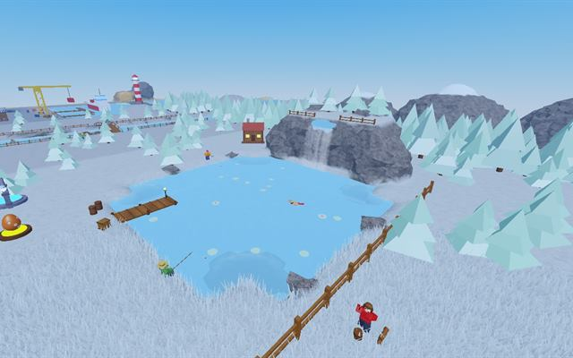
1🌿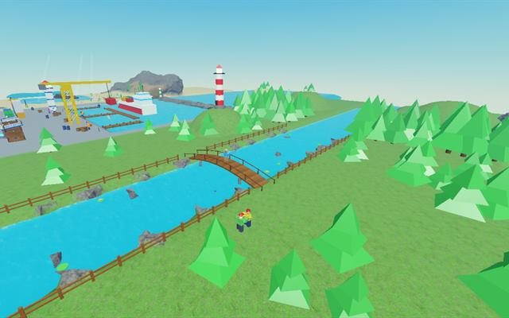
2🌊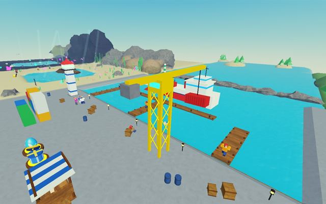
3⚓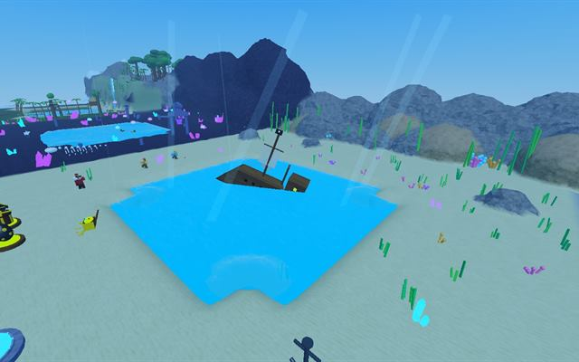
4🚢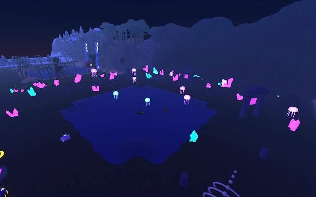
5🌌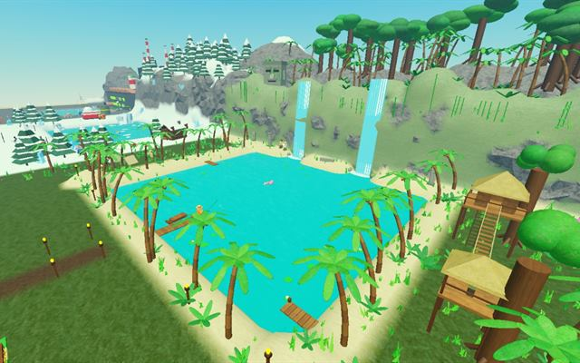
6🌴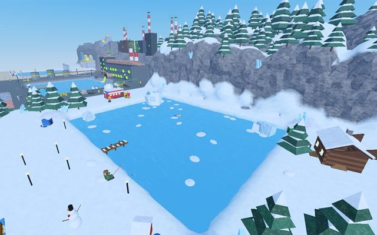
7❄️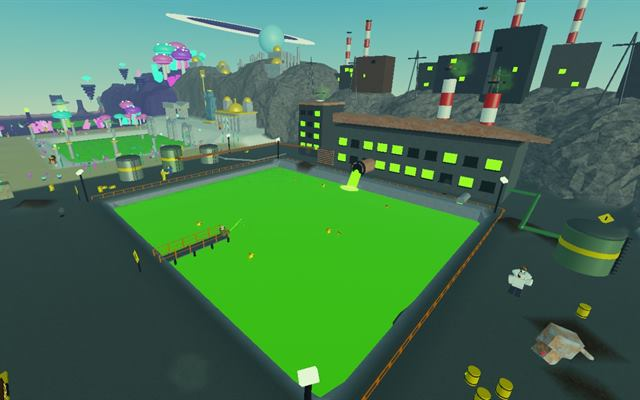
8☢️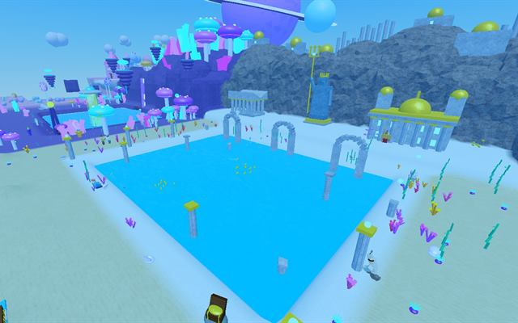
9🔱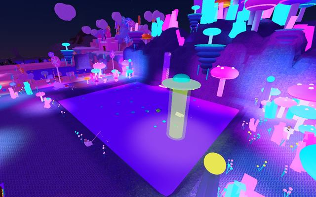
10👽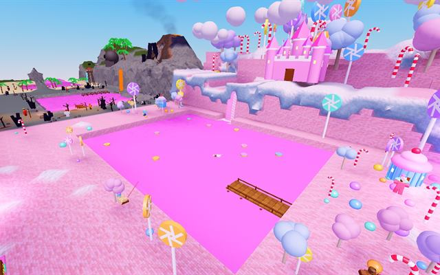
11🍭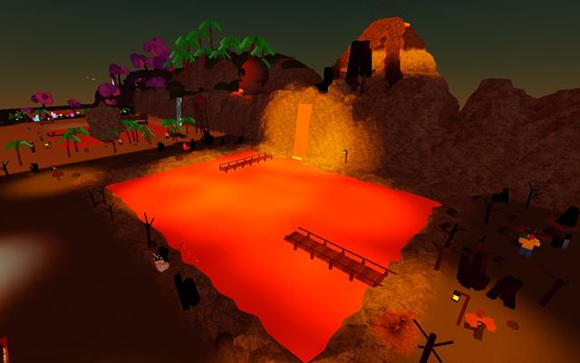
12🌋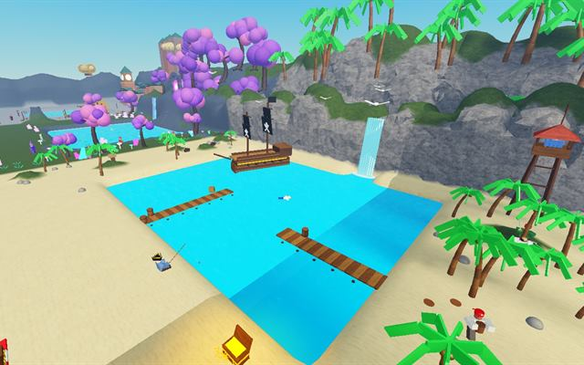
13🏴☠️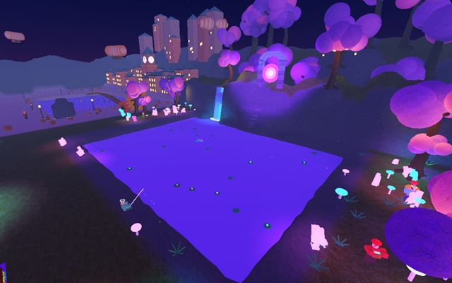
14🍄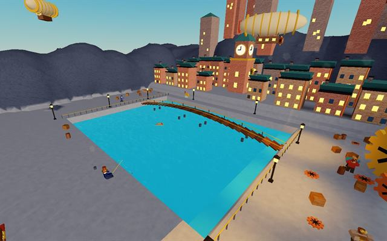
15⚙️Разбивай яйца, открывай сундуки со шляпами и заполняй коллекцию мусора — за каждый собранный мир дают вечный бонус.
Стучи по яйцу, пока оно не треснет. Питомцы бегают, плавают и летают за тобой и увеличивают золото и удачу. Можно надеть сразу трёх.
От простой кепки до Короны морского царя. У каждого мира свой сундук со шляпами.
Пузырьки, радуга, молния, пламя дракона, космическая радуга — чем дороже след, тем быстрее бегаешь. Следы остаются после перерождения.
Каждый новый улов попадает в книгу коллекции. Собери набор мира — и получи вечную прибавку к золоту.
Мир меняется в реальном времени: весенние лепестки, летнее солнце, осенняя листва и зимний снег. Некоторые предметы клюют только в свой сезон.
Раз в час небо становится фиолетовым, бьют молнии, а в воде появляется больше мусора — клюёт намного быстрее. Не пропусти!
В Магнитную рыбалку можно полностью играть бесплатно. Геймпассы действуют навсегда и просто ускоряют путь.
Каждый улов стоит на 50% дороже.
Удача ×1.3: редкий мусор и питомцы чаще.
Клюёт на 25% быстрее во всех мирах.
+50% мест в рюкзаке.
Офлайн-доход ×3 и копится до 24 часов.
Кнопка «Продать всё» работает в любом месте.
Да, в Магнитную рыбалку можно играть бесплатно в Roblox. Геймпассы необязательны и только ускоряют прогресс.
На компьютере (Windows и Mac) через сайт или приложение Roblox, а также на телефонах и планшетах Android и iOS через приложение Roblox. Управление подстраивается под сенсорный экран.
Улучшай удочку и магнит, открывай новые миры, бери питомцев с бонусом удачи и рыбачь во время Магнитной бури — тогда редкие предметы клюют гораздо чаще.
Перерождение обнуляет золото, снаряжение, рюкзак и открытые миры, но навсегда увеличивает множитель золота. Питомцы, шляпы, следы, коллекция и достижения остаются. Дальние миры открываются только после нескольких перерождений.
Да. После 5 перерождений можно обмениваться питомцами и шляпами с другими игроками на сервере.
Да, прогресс автоматически сохраняется в твоём аккаунте Roblox. Пока тебя нет в игре, сеть продолжает ловить мусор за тебя.
На 16 языках: русский, английский, испанский, португальский, французский, немецкий, польский, итальянский, турецкий, индонезийский, хинди, японский, корейский, китайский, тайский и вьетнамский. Игра сама выбирает язык твоего Roblox.
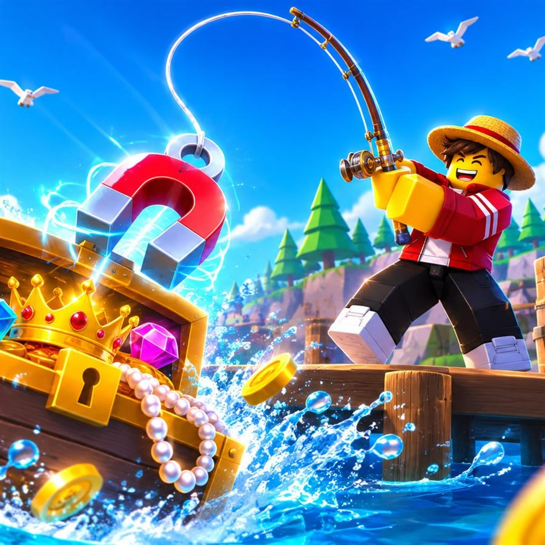
Заходи в Магнитную рыбалку в Roblox — это бесплатно и начинается за пару секунд.
Играть бесплатно в Roblox